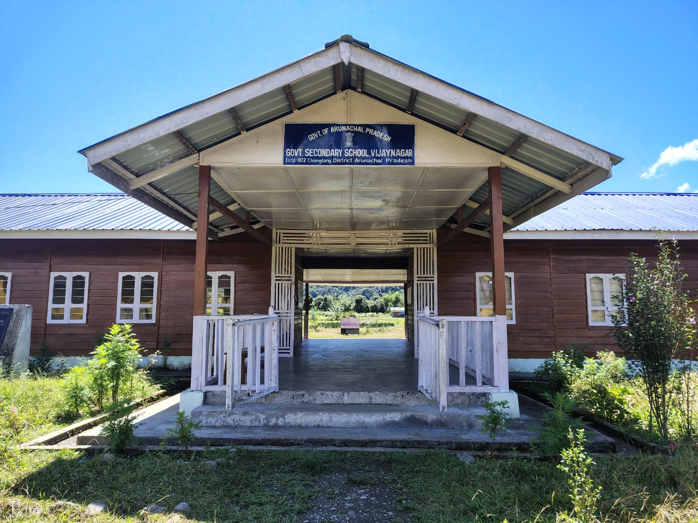

Established
1972
Changlang District, Arunachal Pradesh • PIN 792055
Serving learners and the community of Vijaynagar, Changlang, Arunachal Pradesh since 1972.

1972
I – X
Currently offering VII – X
37
Classes VII – X
7
Teaching staff listed
Government Secondary School, Vijaynagar was established in 1972 and provides school education in a remote area of Changlang district. The school currently offers Classes VII–X and includes vocational education in Tours and Travels.